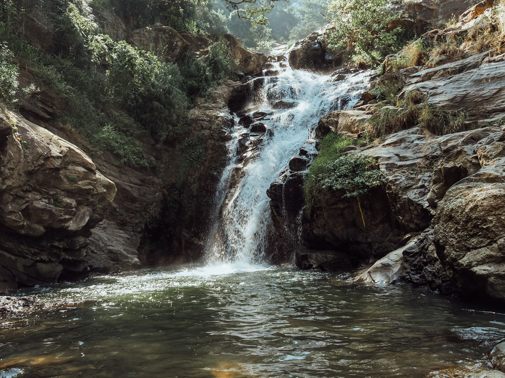
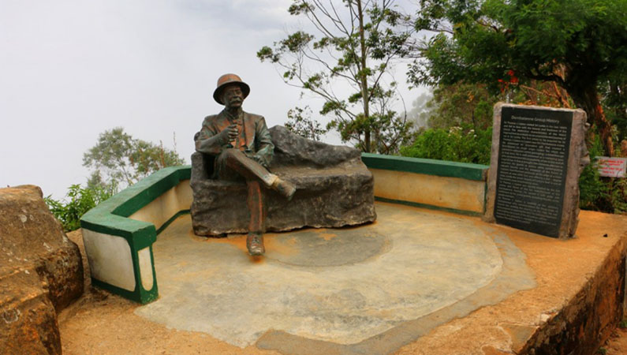

The Nine Arches Bridge (Sinhalese: අහස් නමයේ ආරුක්කු පාලම, also called the Bridge in the Sky)[3] is a bridge in Sri Lanka. It is one of the best examples of colonial-era railway construction in the country.[4] The construction of the bridge is generally attributed to a local Ceylonese builder, P. K. Appuhami, in consultation with British engineers. [5][6] The chief designer and project manager of the 'upcountry railway line of Ceylon' project was D. J. Wimalasurendra, a distinguished Ceylonese engineer and inventor. The designer of the viaduct was Harold Cuthbert Marwood of Railway Construction Department of Ceylon Government Railway. The 1923 report titled "Construction of a Concrete Railway Viaduct in Ceylon" published by the Engineering Association of Ceylon has details of all the records including the plans and drawings. [7] It is located in Demodara, between Ella and Demodara railway stations. The surrounding area has seen a steady increase of tourism due to the bridge's architectural ingenuity and the profuse greenery in the nearby hillsides.[4] Popular rumours suggest that when construction work commenced on the bridge, the Great War began between the empires of Europe and the steel assigned for this site was reallocated to Britain's War related projects at the battlefront. As a result, the work came to a standstill, leading the locals build the bridge with stone bricks and cement, but without steel

Our second hike in Ella was to Little Adam`s Peak, which we did in between the two longer ones. We did this trip without a guide. It is a fairly easy hike and the path is market by signs so it`s easy to find, and very popular among tourists! So expect to meet many other people from all over the world on this trip! On the two other more remote trips we did in Ella, we hardly met anybody, just some locals now and then. The Little Adam`s Peak got it`s named after it`s big brother, the holy mountain Adam`s Peak, because of the similar shape. Adam`s Peak is further west in Sri Lanka, close to Nuwara Eliya, and is 2243 m high and a much more exhausting and more challenging climb! The mountain has however three names; Adam`s Peak (this is where Adam first set foot on earth after being cast out of heaven), Sri Pada (Buddha`s footprint left by the Buddha as he headed towards paradise) and Samanalakande (Butterfly mountain, where butterflies go to die). We had plans of climbing Big Adam`s Peak, but Espen hurt his knee so we settled for the “little brother” instead. The path up the hill to Little Adam`s Peak is easy to find, and is marked by signs showing the way next to the 98 Acres Resort, to the right of this white Buddah.
The point of Lipton’s Seat is reached by climbing for around 7km surrounded by peaceful green tea plantations and an occasional colorful tea plucker. There are two routes available; one from the Nayabedda estate in Bandarawela, and the second through the Dambatenna estate in Haputale. Both routes have entrances marked with sign boards and narrow paved roads. Some parts of the road even have some of the original stone constructions from the British era of Ceylon, and hence are worth seeing from a historical point of view. The climb takes about two and a half hours on average, after a visitor reaches the hill top. From Lipton’s Seat the Uva, Sabaragamuwa, Central and Eastern provinces spread out from before the feet of the viewer in a display rivaling that of the famed World’s End observation point. Visible from the hill top are 7 provinces along with sights such as Handapanagala Lake, Chandrika Lake, Udawalawe Lake, Wedihitikanda Mountains, and even the Hambanthota harbor from the Southern coast.
For those who wish for even more stunning view or photographers wishing to snap a picture of nature at its best, Lipton’s Seat is best visited early in the morning before sunrise. The change of colors as the sun shows its face, as the thick mist flees the heat revealing the carpet of greens and browns spread out below, is a spectacular sight. There is also a very good chance to see basket bearing tea pluckers making their way to work. However, for those visitors who find it hard to wake early, making the hilltop before 10 am should be sufficient to get a reasonably clear view. Visiting Liptons Seat is free for all, in contrast with World’s End which requires a payment. In addition there are a few other attractions along the way including Catherine’s Seat and Lemathota waterfall. Catherine’s Seat is in the Nayabedda estate and provides an excellent view of Bandarawela , Diyatalawa and the Uva valley all the way to the Namunukula mountain range. Lemathota waterfall is on the Dambatenna route, though it is not exactly a major attraction.